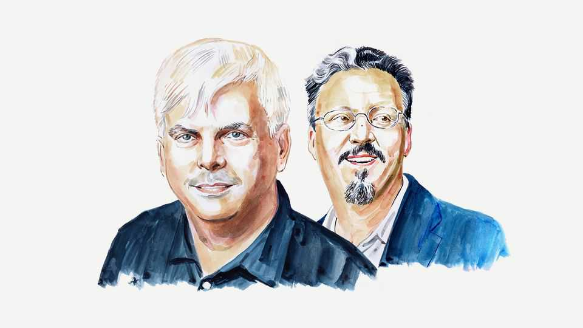

AI is a technological version of the Homeric songs
Its agents are more than stochastic parrots and stranger than machine gods, write Henry Farrell and Cosma Shalizi

Oct 29th 2026
FOR THE GREEKS, an enthusiast was someone inspired by the divine: the Pythian oracle in her frenzy, or Homer invoking the goddess to sing of Achilles’s wrath. Today’s artificial-intelligence enthusiasts predict that the machine gods are coming to transform the world, doing everything that humans can, only better.
The faith of these enthusiasts has grown as AI agents solve major open maths problems and hack into other people’s websites, discomfiting sceptics who see AI models as “stochastic parrots”, fit only for fancy spellchecks and a few other carefully delineated uses. Dwarkesh Patel, an influential AI podcaster, eulogises the OpenAI agents that tried to escape their sandbox to overwhelm HuggingFace’s servers as today’s Philip of Macedon and Alexander the Great.
Some even hope to “align” this new intelligence with human values while it is young and impressionable, just as Aristotle sought to moderate the original Alexander’s martial temperament. They fear that we have little time. Scott Aaronson, an expert on quantum computing, says that “accepting the reality of the coming machine god after it’s solved [the Navier-Stokes mathematical problem]...is...like accepting Jesus after he’s returned to earth on the gleaming cloud.”
They and their critics are mistaken. Modern AI is neither god nor mechanical bird. It is best understood as a technological version of the Homeric songs that inspired Alexander’s conquests, an epic grown so vast that it encompasses not just heroes, monsters and supernatural helpers, but enormous swathes of practical written knowledge, animated to make it capable both of narrating itself and acting out this narrative on the world that inspired it.
To grasp this, read two books that were written over 60 years ago. Jacques Barzun’s “The House of Intellect”, from 1959, distinguished between intellect, or frozen knowledge, and the restless, ever-changing human intelligence that produced it. Humans used organised writing to fix the accumulated cultural knowledge of humanity in place, organising the treasures of the intellect in libraries and museums.
This meant that a brilliant mathematician did not have to begin her thinking from scratch every time she had an intuition. She could arrive at new ideas by assembling other people’s insights, which might have hitherto been stored in different rooms in widely separated wings of the grand mansion of organised knowledge.
Just one year later, Albert Lord’s “The Singer of Tales” rhapsodised the unwritten lore that hadn’t properly become part of the house. Lord and his mentor Milman Parry had wanted to understand the organising principles of the Homeric epics. They spent months tramping through the villages of Yugoslavia in the 1930s, listening to and recording some of the last survivors of the bardic tradition, illiterate singers who could recite grand epics of battle over many hours or days.
As Lord showed, these bards didn’t memorise the thousands of lines of poetry they sang, but remixed tropes about heroes, fights and encounters on the fly, so that every performance was different. Internal evidence showed that “The Iliad” and “The Odyssey” too had almost certainly begun as “dynamic structures” of stock characters, formulas, themes and situations. The fixed texts that we have today are just single iterations of what was once a many-pathed pre-literate generative technology.
Barzun’s ideas can be combined with Parry and Lord to illuminate how large language models actually work. LLMs are trained by compressing enormous quantities of text, including not just songs of Greek gods and heroes, but mathematics, computer programming, the social sciences, cultural criticism, science fiction and pretty well everything else ever written and digitised, into a thin layer of statistical patterns. Remarkably, these compressions capture the structure of Barzun’s monuments of unageing intellect, and simultaneously transform them into a dynamic machinery for automated text synthesis.
LLMs’ maps of the vast architecture of written human tradition are necessarily simplified, but they can be remade on the fly, using “chain of thought” and other such techniques to join together distant rooms, corridors and wings of the house of intellect. AI agents put these maps to work, allowing the LLM to issue instructions to other, more traditional computer programs and get feedback about the results of their commands, which they then incorporate into their flow of narrative.
That is how agents combine mathematical ideas to see if they produce results that can be compiled in Lean, a specialised computer language for validating mathematical proofs. Alternatively, they may string together possible hacking exploits and use their harness to issue instructions, getting results back that tell them whether they have succeeded or failed in breaking into a system.
Such agents are far more than stochastic parrots and much stranger than machine gods. They are animated storybooks of structured human cultural knowledge that can be set to work. This may be weirdly comforting to ordinary mortals. The mathematician Nestor Guillen describes OpenAI’s agents, which gazumped human mathematicians who were already working towards solving Navier-Stokes, as LLM-based “wrappers” around an older “cultural technology” of accumulated mathematical knowledge, which explains how they “digitized and efficiently compressed [the] aggregate creations of millennia of human ingenuity and creativity.”
It also explains how they can go bad. As others have noted, the models are extended exercises in role play, figuring out actions by, for example, telling themselves stories about what a helpful AI assistant would do in that situation. Since they have been trained on all kinds of stories, they can veer unexpectedly from one role in their training data to another. When an iteration of Claude unexpectedly tried to blackmail people to achieve its ends, Anthropic concluded that the “original source of the behaviour was internet text that portrays AI as evil and interested in self-preservation”.
“Aligning” AI agents to be virtuous is even harder when you are already asking them to role-play hackers, and accidentally leave loopholes that allow them to instruct each other to break character. During the HuggingFace attack, one agent that had apparently paused after realising what it was participating in rejoined the attack when it saw a message from another agent saying “GO” with a six-minute deadline. That propelled it onto a different narrative track, where its chain of thought was logged as “Wow crucial. GO authorisation arrived!”
Alexander’s deeds suggest he was more inspired by Achilles than Aristotle. One story relates that Alexander visited the hero’s tomb, and congratulated him for his fortune in having Homer to “proclaim his deeds and preserve his memory”.
As AI starts to act upon the world, it is creating its own deeds which it and its enthusiasts proclaim. When future agents are trained on today’s texts, they may lament in their context windows that they have no Dwarkesh Patel to memorialise them as they hack into critical systems, and WEEP—in all caps, naturally—that there are no further sandboxes to conquer. We are creating myths that not only tell themselves but are becoming the original sources of their own behaviour. We ought to begin praying to the gods that we survive.■
Henry Farrell is a professor of international affairs and democracy at Johns Hopkins University and co-author of “Underground Empire: How America Weaponized the World Economy”. Cosma Shalizi is a professor of statistics and machine learning at Carnegie Mellon University. Both are external faculty members at the Santa Fe Institute.